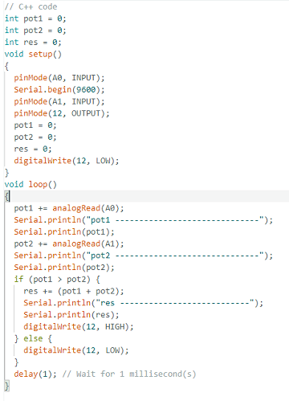
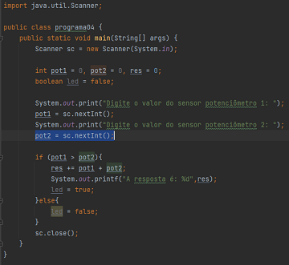

A linguagem assembly é conhecida como uma linguagem de baixo nível ao contrário de C ou C++ . Ela é uma versão legível da linguagem de máquina, utiliza palavras mais conhecidas como mnemônicos.Isso significa que, ao programar em Assembly, você está essencialmente realizando comandos diretos ao processador.
Elas geralmente exigem menos linhas de código e fornecem recursos de gerenciamento de memória, além de outras funcionalidades úteis.Ou seja, são linguagens de programação mais próximas do ser humano, enquanto as de baixo nível estão mais próximas da máquina.
Codigo c++ e Codigo Java
 